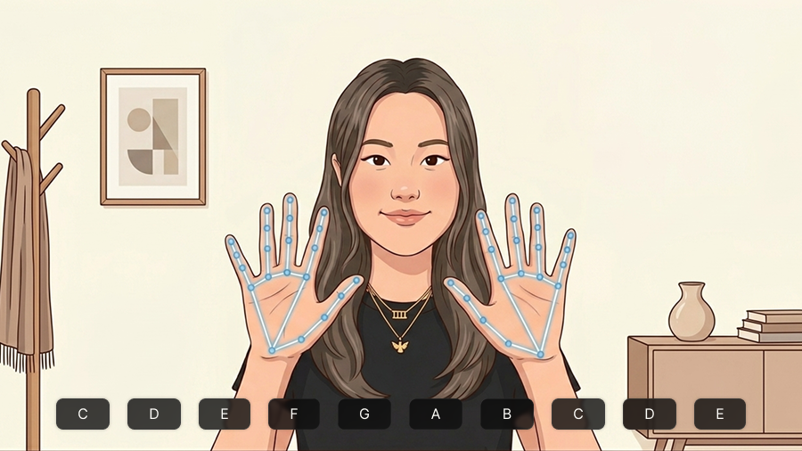
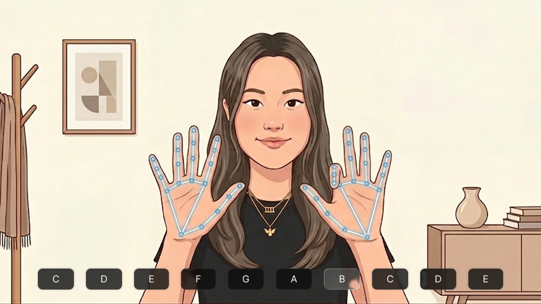
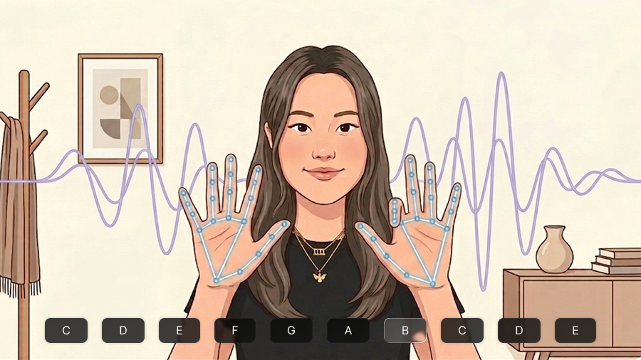

This simulation allows you to rethink what piano playing could look like using just your webcam and hands.
Webcam recommended Sound on
01

Face your palms toward the camera, about an arm's length away.
02

Each finger matches a key from C across both hands.
03

A note plays for as long as your finger stays curled.
Your camera will be used to track your hand movements. Nothing will be recorded or leave your browser. If you're not comfortable with this, you can watch an air piano demo video instead.
Take a moment to reflect on what you just experienced and compare your perspective to everyone else's.
Question 1/6
Choose one to reveal everyone's answers ↓
Survey Results | 0 Survey Respondents
Question 2/6
Choose one to reveal everyone's answers ↓
Survey Results | 0 Survey Respondents
Question 3/6
Choose one to reveal everyone's answers ↓
Survey Results | 0 Survey Respondents
Question 4/6
Choose one to reveal everyone's answers ↓
Survey Results | 0 Survey Respondents
Question 5/6
Choose one to reveal everyone's answers ↓
Survey Results | 0 Survey Respondents
Question 6/6
Choose one to reveal everyone's answers ↓
Survey Results | 0 Survey Respondents
The End
Your perspective has been added to the conversation. Come back later and see how things have changed.